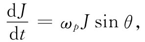
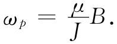
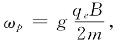

磁矩与角动量成正比的后果之一是，放在磁场中的一个原子磁体将会进动 。首先，我们将按照经典方式来做论证。假设在匀强磁场中有一个自由悬挂着的磁矩μ，它将感受到一个等于μ×B的力矩，该力矩试图将它转至场的方向。但原子磁体是个陀螺仪——它具有角动量J。因此，由磁场所产生的力矩并不会使该磁体排列整齐。而是，磁体将会进动 ，正如我们以前在第1卷第20章中分析陀螺仪时所见到的。角动量——以及和它相随的磁矩——相对一平行于磁场的轴进动。我们可以通过与第1卷第20章中所用的相同的方法求出这个进动速率。
图34-3 一个具有角动量J和与之平行的磁矩μ的物体被放在磁场B中时，将以角速度ωp 进动
假设在一小段时间Δt内角动量从J变至J′，如图34-3所示，而相对于磁场B的方向始终保持一个相同角度θ。让我们称这个进动角速度为ωp 内进动的 角（度）为ωp Δt。从图中的几何形状就可看出，在时间Δt内角动量的改变为
ΔJ=（Jsinθ）（ωp Δt）.
因而角动量的变化率为
 （34.8）
它必定等于转矩
τ=μBsinθ. （34.9）
于是进动的角速度为
 （34.10）
由式（34.6）代入μ/J，则我们见到，对于一个原子系统来说，
 （34.11）
进动频率与B成正比。记住下列两个关系式会很方便，即对于一个原子（或电子），
而对于一个核，
（关于原子与核这两公式不同之处，仅仅是由在这两种情况下g的不同规定引起的）。
这样，按照经典 理论，原子中的电子轨道——和自旋——应在磁场中进动。按照量子力学这是否也正确呢？基本上是正确的，但关于“进动”的意义却有所不同。在量子力学中人们不能在与经典相同的意义上谈论角动量的方向 ，尽管如此，还是存在着十分密切的类似——类似得那么密切以致我们仍称之为“进动”。以后在谈论量子力学时将对此再作讨论。